Load the required packages:
library(sfcr)
library(tidyverse)
#> ── Attaching packages ─────────────────────────────────────── tidyverse 1.3.0 ──
#> ✔ ggplot2 3.3.2 ✔ purrr 0.3.4
#> ✔ tibble 3.0.4 ✔ dplyr 1.0.2
#> ✔ tidyr 1.1.2 ✔ stringr 1.4.0
#> ✔ readr 1.4.0 ✔ forcats 0.5.0
#> ── Conflicts ────────────────────────────────────────── tidyverse_conflicts() ──
#> ✖ dplyr::filter() masks stats::filter()
#> ✖ dplyr::lag() masks stats::lag()Model INSOUT
We’ll start this model by writing down the balance sheet matrix:
bs_insout <- sfcr_matrix(
columns = c("Households", "Firms", "Government", "Central bank", "Banks", "Sum"),
codes = c("h", "f", "g", "cb", "b", "s"),
r1 = c("Inventories", f = "+INV", s = "+INV"),
r2 = c("HPM", h = "+Hhd", cb = "-Hs", b = "+Hbd"),
r3 = c("Advances", cb = "+As", b = "-Ad"),
r4 = c("Checking deposits", h = "+M1h", b = "-M1s"),
r5 = c("Time deposits", h = "+M2h", b = "-M2s"),
r6 = c("Bills", h = "+Bhh", g = "-Bs", cb = "+Bcb", b = "+Bbd"),
r7 = c("Bonds", h = "+BLh * pbl", g = "-BLs * pbl"),
r8 = c("Loans", f = "-Ld", b = "+Ls"),
r9 = c("Balance", h = "-V", f = 0, g = "+GD", cb = 0, b = 0, s = "-INV")
)
sfcr_matrix_display(bs_insout, "bs")| Households | Firms | Government | Central bank | Banks | \(\sum\) | |
|---|---|---|---|---|---|---|
| Inventories | \(+INV\) | \(+INV\) | ||||
| HPM | \(+Hhd\) | \(-Hs\) | \(+Hbd\) | \(0\) | ||
| Advances | \(+As\) | \(-Ad\) | \(0\) | |||
| Checking deposits | \(+M1h\) | \(-M1s\) | \(0\) | |||
| Time deposits | \(+M2h\) | \(-M2s\) | \(0\) | |||
| Bills | \(+Bhh\) | \(-Bs\) | \(+Bcb\) | \(+Bbd\) | \(0\) | |
| Bonds | \(+BLh\cdot pbl\) | \(-BLs\cdot pbl\) | \(0\) | |||
| Loans | \(-Ld\) | \(+Ls\) | \(0\) | |||
| Balance | \(-V\) | \(0\) | \(+GD\) | \(0\) | \(0\) | \(-INV\) |
| \(\sum\) | \(0\) | \(0\) | \(0\) | \(0\) | \(0\) | \(0\) |
And the transactions-flow matrix:
tfm_insout <- sfcr_matrix(
columns = c("Households", "Firms current", "Firms capital", "Govt.", "CB current", "CB capital", "Banks current", "Banks capital"),
codes = c("h", "fc", "fk", "g", "cbc", "cbk", "bc", "bk"),
c("Consumption", h = "-C", fc = "+C"),
c("Govt. Expenditures", fc = "+G", g = "-G"),
c("Ch. Inv", fc = "+(INV - INV[-1])", fk = "-(INV - INV[-1])"),
c("Taxes", fc = "-TX", g = "+TX"),
c("Wages", h = "+WB", fc = "-WB"),
c("Entrepreneurial profits", h = "+FXf", fc = "-FXf"),
c("Bank profits", h = "+FXb", bc = "-FXb"),
c("CB profits", g = "+FXcb", cbc = "-FXcb"),
c("int. advances", cbc = "+ra[-1] * As[-1]", bc = "-ra[-1] * Ad[-1]"),
c("int. loans", fc = "-rl[-1] * Ld[-1]", bc = "+rl[-1] * Ld[-1]"),
c("int. deposits", h = "+rm[-1] * M2h[-1]", bc = "-rm[-1] * M2h[-1]"),
c("int. bills", h = "+rb[-1] * Bhh[-1]", g = "-rb[-1] * Bs[-1]", cbc = "+rb[-1] * Bcb[-1]", bc = "+rb[-1] * Bbd[-1]"),
c("int. bonds", h = "+BLh[-1]", g = "-BLs[-1]"),
c("Ch. advances", cbk = "-(As - As[-1])", bk = "+(Ad - Ad[-1])"),
c("Ch. loans", fk = "+(Ld - Ld[-1])", bk = "-(Ls - Ls[-1])"),
c("Ch. cash", h = "-(Hhh - Hhh[-1])", cbk = "+(Hs - Hs[-1])", bk = "-(Hbd - Hbd[-1])"),
c("Ch. M1", h = "-(M1h - M1h[-1])", bk = "+(M1s - M1s[-1])"),
c("Ch. M2", h = "-(M2h - M2h[-1])", bk = "+(M2s - M2s[-1])"),
c("Ch. bills", h = "-(Bhh - Bhh[-1])", g = "+(Bs - Bs[-1])", cbk = "-(Bcb - Bcb[-1])", bk = "-(Bbd - Bbd[-1])"),
c("Ch. bonds", h = "-(BLh - BLh[-1]) * pbl", g = "+(BLs - BLs[-1]) * pbl")
)
sfcr_matrix_display(tfm_insout, "tfm")| Households | Firms current | Firms capital | Govt. | CB current | CB capital | Banks current | Banks capital | \(\sum\) | |
|---|---|---|---|---|---|---|---|---|---|
| Consumption | \(-C\) | \(+C\) | \(0\) | ||||||
| Govt. Expenditures | \(+G\) | \(-G\) | \(0\) | ||||||
| Ch. Inv | \(+\Delta INV\) | \(-\Delta INV\) | \(0\) | ||||||
| Taxes | \(-TX\) | \(+TX\) | \(0\) | ||||||
| Wages | \(+WB\) | \(-WB\) | \(0\) | ||||||
| Entrepreneurial profits | \(+FXf\) | \(-FXf\) | \(0\) | ||||||
| Bank profits | \(+FXb\) | \(-FXb\) | \(0\) | ||||||
| CB profits | \(+FXcb\) | \(-FXcb\) | \(0\) | ||||||
| int. advances | \(+ra_{-1}\cdot As_{-1}\) | \(-ra_{-1}\cdot Ad_{-1}\) | \(0\) | ||||||
| int. loans | \(-rl_{-1}\cdot Ld_{-1}\) | \(+rl_{-1}\cdot Ld_{-1}\) | \(0\) | ||||||
| int. deposits | \(+rm_{-1}\cdot M2h_{-1}\) | \(-rm_{-1}\cdot M2h_{-1}\) | \(0\) | ||||||
| int. bills | \(+rb_{-1}\cdot Bhh_{-1}\) | \(-rb_{-1}\cdot Bs_{-1}\) | \(+rb_{-1}\cdot Bcb_{-1}\) | \(+rb_{-1}\cdot Bbd_{-1}\) | \(0\) | ||||
| int. bonds | \(+BLh_{-1}\) | \(-BLs_{-1}\) | \(0\) | ||||||
| Ch. advances | \(-\Delta As\) | \(+\Delta Ad\) | \(0\) | ||||||
| Ch. loans | \(+\Delta Ld\) | \(-\Delta Ls\) | \(0\) | ||||||
| Ch. cash | \(-\Delta Hhh\) | \(+\Delta Hs\) | \(-\Delta Hbd\) | \(0\) | |||||
| Ch. M1 | \(-\Delta M1h\) | \(+\Delta M1s\) | \(0\) | ||||||
| Ch. M2 | \(-\Delta M2h\) | \(+\Delta M2s\) | \(0\) | ||||||
| Ch. bills | \(-\Delta Bhh\) | \(+\Delta Bs\) | \(-\Delta Bcb\) | \(-\Delta Bbd\) | \(0\) | ||||
| Ch. bonds | \(-\Delta BLh\cdot pbl\) | \(+\Delta BLs\cdot pbl\) | \(0\) | ||||||
| \(\sum\) | \(0\) | \(0\) | \(0\) | \(0\) | \(0\) | \(0\) | \(0\) | \(0\) | \(0\) |
Let’s start with the external variables of the model as they are crucial to solve the model.
First, it is important to calculate consistent values of the lambda parameters. I’ll start from Zezza’s parameters. However, his definition of lambda21, lambda31, and lambda41 are not consistent with the horizontal constraints.
To remedy the problem, I erased these values and recalculate them with the explicit help of the constraints:
# Note: there's a mistake in Zezza's parameters lambda11, lambda21, lambda31,
# and lambda41.
lambda20 = 0.52245
lambda22 = 30
lambda23 = -15
lambda24 = -15
lambda25 = -0.06
lambda30 = 0.47311
lambda32 = -15
lambda33 = 30
lambda34 = -15
lambda35 = -0.06
lambda40 = 0.17515
lambda42 = -15
lambda43 = -15
lambda44 = 30
lambda45 = -0.06
lambda10 <- 1 - (lambda20 + lambda30 + lambda40)
#lambda10
lambda15 <- -(lambda25 + lambda35 + lambda45)
#lambda15
# lambda31 = - (lambda33 + lambda32 + lambda34)
lambda31 <- -(lambda33 + lambda32 + lambda34)
# lambda41 = - (lambda44 + lambda42 + lambda43)
lambda41 <- -(lambda44 + lambda42 + lambda43)
# lambda21 = - (lambda22 + lambda23 + lambda24)
lambda21 = -(lambda22 + lambda23 + lambda24)
cat("lambda21: ", lambda21)
#> lambda21: 0
cat("lambda31: ", lambda31)
#> lambda31: 0
cat("lambda41: ", lambda41)
#> lambda41: 0
lambda12 = lambda21
lambda13 = lambda31
lambda14 = lambda41
lambda11 = -(lambda12 + lambda13 + lambda14)
# Print their values to screen:
new_lambdas <- c(lambda10 = lambda10,
lambda11 = lambda11,
lambda12 = lambda12,
lambda13 = lambda13,
lambda14 = lambda14,
lambda15 = lambda15)
iwalk(new_lambdas, ~cat(.y, " = ", .x, "\n"))
#> lambda10 = -0.17071
#> lambda11 = 0
#> lambda12 = 0
#> lambda13 = 0
#> lambda14 = 0
#> lambda15 = 0.18With the new lambda values at hand, we can write down the external variables
insout_ext <- sfcr_set(
# EXOGENOUS
rbl ~ 0.027,
rb ~ 0.023,
pr ~ 1,
g ~ 25,
Nfe ~ 133.28, ## Zezza supplies this exogenous full employment value
#Nfe ~ 142.75,
# In model DISING Nfe was defined as `s / pr` but it doesn't work here.
# I discuss this issue in experiment #2.
# PARAMETERS
alpha0 ~ 0,
alpha1 ~ 0.95,
alpha2 ~ 0.05,
beta ~ 0.5,
bot = bot ~ 0.02,
botpm = botpm ~ 0.003,
epsilon ~ 0.5,
gamma ~ 0.5,
lambdac ~ 0.1,
phi ~ 0.1,
ro1 ~ 0.1,
ro2 ~ 0.1,
sigma0 ~ 0.3612,
sigma1 ~ 3,
tau ~ 0.25,
zetab ~ 0.9,
zetal ~ 0.0002,
zetam ~ 0.0002,
Omega0 ~ -0.32549,
Omega1 ~ 1,
Omega2 ~ 1.5,
Omega3 ~ 0.1,
#top ~ 0.04, # Zezza's top
top = top ~ 0.06,
toppm = toppm ~ 0.005,
# PORTFOLIO PARAMETERS
# (note that the sfcr package does not evaluate variables defined in the global environment when setting the external variables.
# Therefore, the parameters' values must be added by hand here.)
lambda10 ~ -0.17071,
lambda11 ~ 0,
lambda12 ~ 0,
lambda13 ~ 0,
lambda14 ~ 0,
lambda15 ~ 0.18,
lambda20 ~ 0.52245,
lambda21 ~ 0,
lambda22 ~ 30,
lambda23 ~ -15,
lambda24 ~ -15,
lambda25 ~ -0.06,
lambda30 ~ 0.47311,
lambda31 ~ 0,
lambda32 ~ -15,
lambda33 ~ 30,
lambda34 ~ -15,
lambda35 ~ -0.06,
lambda40 ~ 0.17515,
lambda41 ~ 0,
lambda42 ~ -15,
lambda43 ~ -15,
lambda44 ~ 30,
lambda45 ~ -0.06
)And next the equations of the system:
insout_eqs <- sfcr_set(
# Firm's behavioral equations
y ~ sE + (invE - inv[-1]),
N ~ y / pr,
WB ~ N * W,
UC ~ WB / y,
sE ~ beta * s[-1] + (1 - beta) * sE[-1],
invT ~ sigmaT * sE,
sigmaT ~ sigma0 - sigma1 * rl,
#rrl ~ ((1 + rl) / (1 + pi)) - 1,
invE ~ inv[-1] + gamma * (invT - inv[-1]),
p ~ (1 + tau) * (1 + phi) * NHUC,
NHUC ~ (1 - sigmaT) * UC + sigmaT * (1 + rl[-1]) * UC[-1], ## rl[-1] instead of rl
# FXfE ~ (phi / (1 + phi)) * (1 / (1 + tau)) * p * sE,
# OK
# Firm's realized outcomes
s ~ c + g,
S ~ s * p,
inv ~ inv[-1] + y - s,
sigmas ~ inv[-1] / s,
INV ~ inv * UC,
Ld ~ INV,
FXf ~ S - TX - WB + (INV - INV[-1]) - rl[-1] * INV[-1], # rl[-1] instead of rl
pi ~ (p / p[-1]) - 1,
# OK
# Households realized outcomes
YDr ~ FX + WB + rm[-1] * M2h[-1] + rb[-1] * Bhh[-1] + BLh[-1], ## Here's a mistake in Zezza's code. It should be M2h[-1] as in G&L and NOT M2d.
CG ~ (pbl - pbl[-1]) * BLh[-1],
YDhs ~ YDr + CG,
FX ~ FXf + FXb,
V ~ V[-1] + YDhs - C,
Vnc ~ V - Hhh, ## Zezza writes it as Hhd instead of Hhh. Here it is harmless, but theoretically it should be Hhh and not Hhd as what matters for wealth net of cash is the realized holdings of cash.
ydr ~ YDr/p - pi * (V[-1]/p),
ydhs ~ (YDr - pi * V[-1] + CG) / p,
#ydhs ~ c + v - v[-1], # Equation 10.27A
v ~ V/p,
# OK
# Households behavioral
c ~ alpha0 + alpha1 * ydrE + alpha2 * v[-1],
ydrE ~ epsilon * ydr[-1] + (1 - epsilon) * ydrE[-1],
C ~ p * c,
YDrE ~ p * ydrE + pi * (V[-1]/p),
VE ~ V[-1] + (YDrE - C),
Hhd ~ lambdac * C,
VncE ~ VE - Hhd,
ERrbl ~ rbl, ## ERrbl is not on the list of equations. I kept it simple.
# OK
# Households' portfolio equations
# There's no M1d equation in Zezza's code as they are not necessary
M2d ~ VncE * (lambda20 + lambda22 * rm + lambda23 * rb + lambda24 * ERrbl + lambda25 * (YDrE / VncE)),
Bhd ~ VncE * (lambda30 + lambda32 * rm + lambda33 * rb + lambda34 * ERrbl + lambda35 * (YDrE / VncE)),
BLd ~ (VncE / pbl) * (lambda40 + lambda42 * rm + lambda43 * rb + lambda44 * ERrbl + lambda45 * (YDrE / VncE)),
# OK
# However, it is a good exercise to write them down. If all values are correct, the equations
# below must be equal.
M1d ~ VncE * (lambda10 + lambda12 * rm + lambda13 * rb + lambda14 * ERrbl + lambda15 * (YDrE / VncE)),
M1d2 ~ VncE - M2d - Bhd - pbl * BLd,
# Realized portfolio asset holdings
# Bhs ~ Bhd, # Not explicit in GL
Hhh ~ Hhd,
Bhh ~ Bhd,
BLh ~ BLd,
M1hN ~ Vnc - M2d - Bhd - pbl * BLd,
z1 ~ if (M1hN > 0) {1} else {0},
z2 ~ 1 - z1,
M1h ~ M1hN * z1,
M2hN ~ M2d,
M2h ~ M2d * z1 + (Vnc - Bhh - pbl * BLd) * z2,
# OK
# Government's equations
TX ~ S * (tau / (1 + tau)),
G ~ p * g,
PSBR ~ G + rb[-1] * Bs[-1] + BLs[-1] - (TX + FXcb),
Bs ~ Bs[-1] + PSBR - (BLs - BLs[-1]) * pbl,
BLs ~ BLd,
pbl ~ 1 / rbl,
GD ~ GD[-1] + PSBR, # Not in the equations list, but I added to check BS consistency
# OK
# Central bank's equations
Hs ~ Bcb + As,
Hbs ~ Hs - Hhs,
Bcb ~ Bs - Bhh - Bbd,
As ~ Ad,
ra ~ rb,
FXcb ~ rb[-1] * Bcb[-1] + ra[-1] * As[-1],
# OK
# Bank's realized (supply) equations
Hhs ~ Hhd,
M1s ~ M1h, ## M1h instead of M1d as in Zezza. Bank's supply the realized portfolio holdings and NOT its notional demand.
M2s ~ M2h, ## M2h instead of M2d as in Zezza. Bank's supply the realized portfolio holdings and NOT its notional demand.
# Otherwise, the model would not close because M1d depends on EXPECTED wealth but the REALIZED demand for deposits depends
# on REALIZED wealth. It is a residual variable. The bank's supply the deposits that are ACTUALLY needed.
# You can check that M1d, however measured, only equals M1h in the stationary state.
Ls ~ Ld,
Hbd ~ ro1 * M1s + ro2 * M2s,
# OK
# Bank's balance sheet constraints
BbdN ~ M1s + M2s - Ls - Hbd,
BLRN ~ BbdN / (M1s + M2s),
Ad ~ (bot * (M1s + M2s) - BbdN) * z3, ## Z3 instead of Z4
z3 ~ if (BLRN < bot) {1} else {0},
Bbd ~ Ad + M1s + M2s - Ls - Hbd,
BLR ~ Bbd / (M1s + M2s),
# OK
# Determination of interest rates by banks
rm ~ rm[-1] + zetam * (z4 - z5) + zetab * (rb - rb[-1]),
z4 ~ if (BLRN[-1] < bot) {1} else {0},
z5 ~ if (BLRN[-1] > top) {1} else {0},
FXb ~ rl[-1] * Ls[-1] + rb[-1] * Bbd[-1] - rm[-1] * M2s[-1] - ra[-1] * Ad[-1],
rl ~ rl[-1] + zetal * (z6 - z7) + (rb - rb[-1]),
z6 ~ if (BPM < botpm) {1} else {0},
z7 ~ if (BPM > toppm) {1} else {0},
# Since the sfcr package does not accept more than 1 lag directly,
# we need to create two auxiliary values that are lags of endogenous
# variables and then take the lag of these variables
lM1s ~ M1s[-1],
lM2s ~ M2s[-1],
BPM ~ (FXb + FXb[-1]) / (lM1s + lM1s[-1] + lM2s + lM2s[-1]),
# OK
# Inflationary forces
#omegaT ~ Omega0 + Omega1 * pr + Omega2 * (N / Nfe),
omegaT ~ exp(Omega0 + Omega1 * log(pr) + Omega2 * log(N / Nfe)), ## Zezza's equation
# The model explodes if G&L's definition of omegaT is used.
W ~ W[-1] * (1 + Omega3 * (omegaT[-1] - (W[-1] / p[-1]))),
# Nfe ~ s / pr, ## Zezza's definition in model DISINF. Doesn't work here.
# Nfe ~ s[-1] / pr, ## One possible solution
Y ~ p * s + UC * (inv - inv[-1])
)As usual, let’s make a helper function to simplify the plotting:
(programming tip: keep coming back to this function and adding the names and the transformations you want. The final version will have all the transformations you use in your analysis)
do_plot <- function(model, variables) {
# The lookup_names table has the code of the variables
# and the name I wanted displayed in the Figures.
lookup_names <- tribble(
~name, ~Var,
"dBhh", "HH. Bills",
"dV", "Wealth",
"dM1s", "Checking deposits",
"dM2s", "Time deposits",
"dHhs", "Cash",
"dBLh", "HH. Bonds",
"yr", "Real output",
"cr", "Real consumption",
"ydr", "Real disposable income",
"c", "Real consumption",
"v", "Real wealth",
"rm", "Interest on term deposits",
"rb", "Interest on bills",
"rl", "Interest on loans",
"rbl", "Interest on bonds",
"dLs", "Loans",
"dM", "All money deposits",
"M", "All money deposits",
"dAs", "CB advances",
"dHbs", "Reserves",
"dBbd", "B. Bills",
"BLRN", "Net bank liq. ratio",
"BPM", "Bank profit margin",
"dGb", "Government budget balance",
"Bcb", "CB. Bills",
"dPSBR", "Deflated PSBR",
"pi", "Inflation",
"gr", "Real govt. budget balance - Book",
"gr2", "Real govt. budget balance - tav",
"gr3", "Real govt. budget balance - cb adj.",
"BYR", "Debt to GDP ratio",
"dCB", "Change in the CB' stock of bills",
"ddAs", "Change in Advances to banks",
"y", "Real output",
"s", "Real sales"
)
model %>%
mutate(yr = y / y[1],
cr = c / c[1],
dV = V - V[1],
dM1s = M1s - M1s[1],
dM2s = M2s - M2s[1],
dBhh = Bhh - Bhh[1],
dHhs = Hhs - Hhs[1],
dBLh = (pbl * BLh) - (pbl[1] * BLh[1]),
dLs = Ls - Ls[1],
M = M1s + M2s,
dM = M - M[1],
dAs = As - As[1],
dHbs = Hbs - Hbs[1],
dBbd = Bbd - Bbd[1],
dGb = -1 * (PSBR - PSBR[1]),
dPSBR = PSBR / p,
tav = (p - lag(p)) / p,
gr = ((p - lag(p)) * (lag(Bs) + lag(BLs) * lag(pbl)) - PSBR) / p,
gr2 = (tav * (lag(Bs) + lag(BLs) * lag(pbl)) - PSBR) / p,
gr3 = (tav * (lag(Bs) - lag(Bcb) + lag(BLs) * lag(pbl) - lag(As)) - PSBR)/p,
BYR = (Bs + pbl * BLs) / Y,
dCB = Bcb - lag(Bcb),
ddAs = As - lag(As)
) %>%
select(period, all_of(variables)) %>%
pivot_longer(cols = -period) %>%
# Left-join the lookup_names table
left_join(lookup_names, by = "name") %>%
mutate(Var = if_else(is.na(Var), name, Var)) %>%
ggplot(aes(x = period, y = value)) +
geom_line(aes(color = Var)) +
scale_color_brewer("Variable", type = 'qual', palette = "Dark2")
}We are now ready to estimate the model:
insout <- sfcr_baseline(
equations = insout_eqs,
external = insout_ext,
periods = 210,
initial = sfcr_set(p ~ 1, W ~ 1, UC ~ 1, BPM ~ 0.0035),
hidden = c("Hbd" = "Hbs"),
tol = 1e-15
)Fulfilling the hidden equation is a good sign. But did the model arrive to a sensible steady state?
insout %>%
pivot_longer(cols = -period) %>%
filter(name %in% c("Y", "y", "s", "inv", "pi", "Bs", "M1s", "M2s", "V", "INV", "FXf", "FXb")) %>%
ggplot(aes(x = period, y = value)) +
geom_line() +
facet_wrap(~name, scales = "free_y") +
labs(title = "INSOUT", subtitle = "Stable steady state")
So far, so good. But what about the variables that depend on bot, top, botpm, toppm? We need to check that the margins are not too tight. If they are, BLRN becomes a ping pong, as in the example below:
insout_ext$top <- top ~ 0.03
insout_ext$bot <- bot ~ 0.02
pingpong <- sfcr_baseline(
equations = insout_eqs,
external = insout_ext,
periods = 200,
initial = sfcr_set(p ~ 1, W ~ 1, UC ~ 1),
hidden = c("Hbd" = "Hbs"),
tol = 1e-25,
method = "Broyden"
)
# Some values are cut out given the limits I set to this plot
pingpong %>%
do_plot(variables = c("BLRN", "bot", "top")) +
ylim(-0.1, 0.1)
Ping pong is bad because it prevents a stable steady state where we wanna run our scenarios.
Setting top to 0.1 solves the problem:
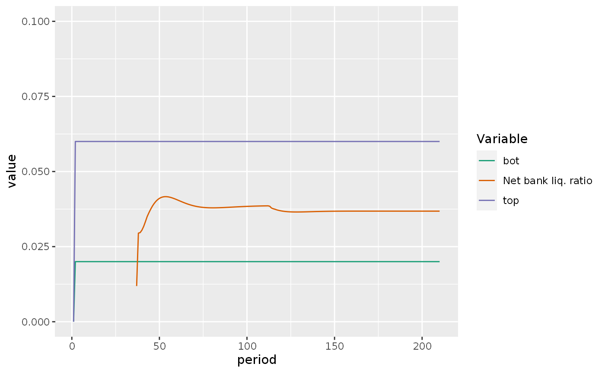
What about BPM and toppm and botpm?
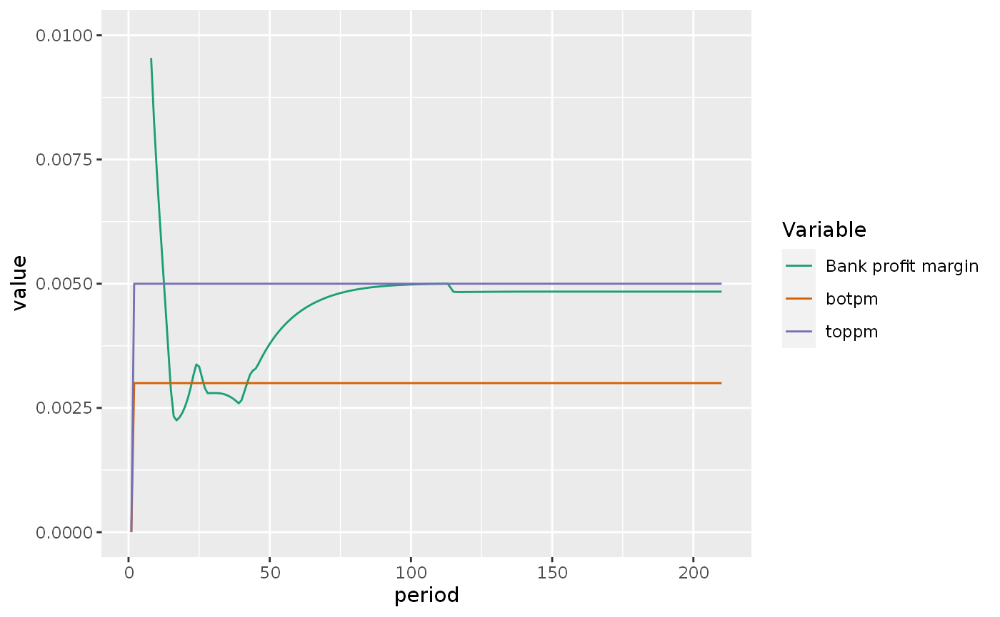
Here we see that the margins are fine.
We can use the sfcr package to visualize the transactions-flow matrix as a Sankey’s diagram:
sfcr_sankey(tfm_insout, insout, "start")Let’s take a look at the structure of this model:
p1 <- sfcr_dag_cycles_plot(insout_eqs, size = 7.5) +
theme(legend.position = "bottom")
p1
As can be seen, this model is entirely acyclical.
This plot shows a common problem in plotting SFC models as DAGs: they become too cluttered to be understandable. I provided a small workaround by changing the size of the points in the plots.
Let’s add scenarios to this model:
Simulation 1: An increase in the targeted inventories to sale ratio
shock1 <- sfcr_shock(
variables = sfcr_set(
sigma0 ~ 0.4
),
start = 5,
end = 70
)
insout1 <- sfcr_scenario(
baseline = insout,
periods = 70,
scenario = list(shock1)
)
insout1 %>%
do_plot(variables = c("INV", "Ls")) +
labs(title = 'INSOUT1',
subtitle = "Evolution of inventories and bank loans")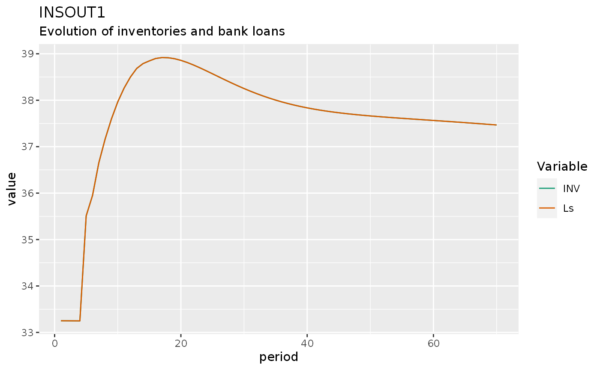
insout1 %>%
do_plot(variables = c("yr", "cr")) +
labs(title = "INSOUT1",
subtitle = "Evolution of real consumption and output")
insout1 %>%
filter(period > 2, period < 10) %>%
do_plot(variables = c("dV", "dBhh", "dBLh", "dM1s", "dM2s", "dHhs")) +
#facet_wrap(~name, scales = "free_y") +
labs(title = "INSOUT1",
subtitle = "Evolution of household wealth and its components")
insout1 %>%
do_plot(variables = c("rb", "rm")) +
labs(title = "INSOUT1",
subtitle = "Evolution of short-term interest rates")
insout1 %>%
filter(period > 3, period < 10) %>%
do_plot(variables = c("dM", "dLs", "dAs", "dHbs", "dBbd")) +
labs(title = "INSOUT1",
subtitle = "Evolution of banks' balance sheet")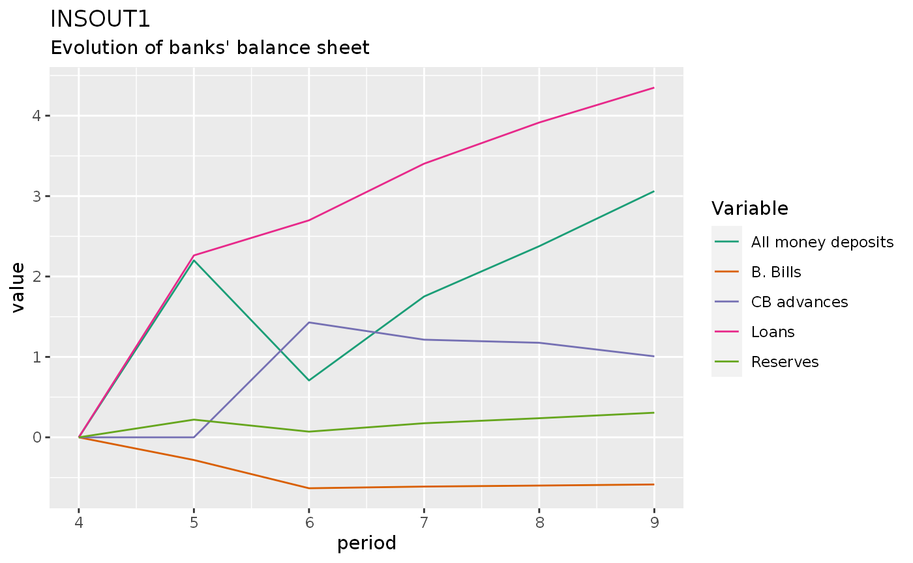
insout1 %>%
do_plot(variables = c("BLRN", "bot", "top")) +
labs(title = "INSOUT1",
subtitle = "Evolution of net bank liquidity ratio")
insout1 %>%
do_plot(variables = c("BPM", "toppm", "botpm")) +
labs(title = "INSOUT1",
subtitle = "Evolution of the bank profitability margin")
insout1 %>%
do_plot(variables = "dGb") +
theme(legend.position = "bottom") +
labs(title = "INSOUT1",
subtitle = "Evolution of the government budget balance")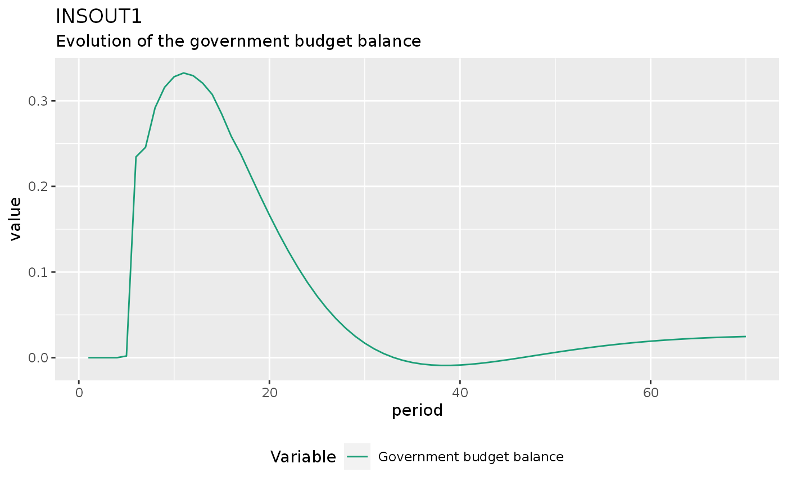
insout1 %>%
do_plot(variables = "Bcb") +
theme(legend.position = "bottom") +
labs(title = "INSOUT1",
subtitle = "Evolution of the stock of treasury bills hend by the central bank")
I’ll run one sensitivity test here to show that there’s nothing in the model that prevents the interest rate on deposits to become higher than the interest rate on bills:
sigma0 <- seq(0.37, 0.55, 0.02)
m.shock1 <- sfcr_expand(shock1, "sigma0", sigma0)
m.insout1 <- sfcr_multis(
expanded = m.shock1,
fixed = insout,
periods = 70
)
library(RColorBrewer)
mypal <- colorRampPalette(brewer.pal(6, "GnBu")[3:6])
mypal2 <- colorRampPalette(brewer.pal(6, "OrRd")[3:6])
m.insout1 %>%
bind_rows() %>%
group_by(simulation) %>%
ungroup %>%
pivot_longer(cols = -c(period, simulation)) %>%
filter(name %in% c("rm")) %>%
mutate(inter = interaction(as_factor(simulation), as_factor(name))) %>%
#mutate(inter = as.numeric(inter)) %>%
#mutate(inter = interaction(simulation, name)) %>%
ggplot(aes(x = period, y = value)) +
geom_hline(color = "darksalmon", yintercept = 0.023, size = 1.5, alpha = 1) +
geom_line(aes(color = inter), size = 1.5, alpha = .9) +
theme(legend.position = "right") +
#facet_wrap(~simulation, scales = "free_y") +
#scale_colour_steps() +
scale_color_manual("Sigma 0",
values = c(mypal(length(sigma0))),
labels = paste0(sigma0)) +
annotate("text", x = 4, y = 0.0235, label = "Rate on bills") +
annotate("text", x = 47, y = 0.027, label = "Rate on deposits") +
labs(title = "INSOUT1",
subtitle = "Evolution of short-term interest rates") +
guides(color = guide_legend(override.aes = list(alpha = 1)))
This experiment shows that nothing prevents the interest rate on deposits to cross the interest rate on bills. However, one should also wonder about the economic meaning of the different sigma0 values when judging the model.
Simulation 2: An increase in pure government expenditure
Let’s increase the real pure government expenditures by 20%:
shock2 <- sfcr_shock(
variables = sfcr_set(
g ~ 30
),
start = 5,
end = 55
)
insout2 <- sfcr_scenario(insout, list(shock2), periods = 55, tol = 1e-15)
insout2 %>%
do_plot(variables = c("c", "v", "ydr")) +
labs(title = 'INSOUT2',
subtitle = "Evolution of HH. real consumption, disp. income, and wealth")
insout2 %>%
#mutate(PSBR = PSBR / p) %>%
do_plot(variables = c("dPSBR", "PSBR")) +
labs(title = "INSOUT2",
subtitle = "Evolution of deflated PSBR")
The next experiment checks the impact of an increase in government expenditures on the inflation rate. When I first tried this experiment, I defined Nfe as s / pr, as in model DISINF. With this definition, I was getting the strange result that an increase in g was actually deflationary. When I defined Nfe as an exogenous variable, the result was similar to the one found in Godley and Lavoie (2007).
The reason is that g directly affect s is model INSOUT. Hence, an increase in g directly increase Nfe, while N reacts with a lag. The increase in the gap N / Nfe negatively affects omegaT (the target real wage of workers), which will ultimately lead to lower W and hence lower UC, affecting NHUC which ultimately affects p.
insout2 %>%
do_plot(variables = c("pi")) +
labs(
title = "INSOUT2",
subtitle = "Evolution of the price inflation rate"
)
The following figure replicates Figure 10.2D in Godley and Lavoie (2007, 353). However, I’m almost certain that there is a typo in the real government budget balance definition.
In the book, it is defined as:
\[ gr = \frac{-PSBR + (\Delta p) \cdot (B_{s-1} + BL_{s-1} * p_{bL-1})}{p} \]
I think that the correct definition should be:
\[ gr2 = \frac{-PSBR + tav \cdot (B_{s-1} + BL_{s-1} * p_{bL-1})}{p} \]
where \(tav = (\Delta p) / p\).
insout2 %>%
do_plot(c("gr", "gr2", "gr3")) +
labs(title = "INSOUT2",
subtitle = "Evolution of the real budget balance",
caption = "Takes into account the capital gains due to the erosion of the public debt\n by price inflation.")
#> Warning: Removed 3 row(s) containing missing values (geom_path).
A possible third definition would remove the bills and the advances held by the BCB from the inflation capital gains. It seems reasonable to me and consistent with equation 10.96 (Godley and Lavoie 2007) [p. 368] that describes the steady state with inflation:
\[ g + \breve{r} \left[ v - in \cdot \frac{UC}{p} \right] - tav \left[ v - in \cdot \frac{UC}{p} \right] = \frac{T}{p} \]
However, as can be seen above, it does not converges to zero (although converges to a steady state). In the remaining of this notebook, I will use gr2 definition
insout2 %>%
do_plot("BYR") +
labs(title = "INSOUT2")
insout2 %>%
do_plot(c("rl", "rm", "rb", "rbl")) +
labs(title = "INSOUT2",
subtitle = "Evolution of interest rates")
insout2 %>%
filter(period > 3, period < 10) %>%
do_plot(c("dBbd", "dM1s", "dM2s", "dLs", "dHbs")) +
labs(title = "INSOUT2",
subtitle = "Evolution of banks' balance sheet")
insout2 %>%
do_plot(c("BLRN", "top", "bot")) +
labs(title = "INSOUT2",
subtitle = "Evolution of the net bank liquidity ratio")
insout2 %>%
do_plot(c("BPM", "toppm", "botpm")) +
labs(title = "INSOUT2",
subtitle = "Evolution of the bank profitability margin")
insout2 %>%
do_plot(c("dCB", "ddAs")) +
labs(title = "INSOUT2",
subtitle = "Evolution of the central bank balance sheet")
#> Warning: Removed 2 row(s) containing missing values (geom_path).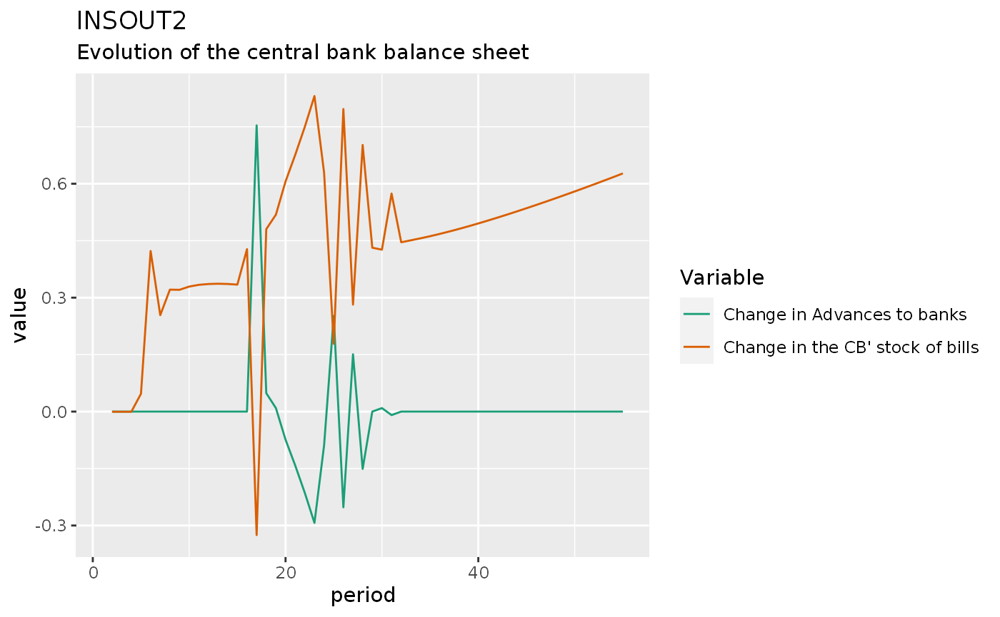
insout2 %>%
mutate(across(c(Bcb, Bs, Bhh, Bbd), ~.x / p)) %>%
do_plot(c("Bcb", "Bs", "Bhh", "Bbd")) +
labs(title = "INSOUT2",
subtitle = "Evolution of deflated bills")
Simulation 3: An increase in the compulsory reserve ratios
shock3 <- sfcr_shock(
variables = sfcr_set(
ro1 ~ 0.2,
ro2 ~ 0.2
),
start = 5,
end = 70
)
insout3 <- sfcr_scenario(insout, list(shock3), 70)
insout3 %>%
#select(period, M1s, M2s, As, Ls)
filter(period > 2, period < 10) %>%
do_plot(variables = c("dM", "dLs", "dAs", "dHbs", "dBbd")) +
labs(title = "INSOUT3",
subtitle = "Evolution of banks' balance sheet")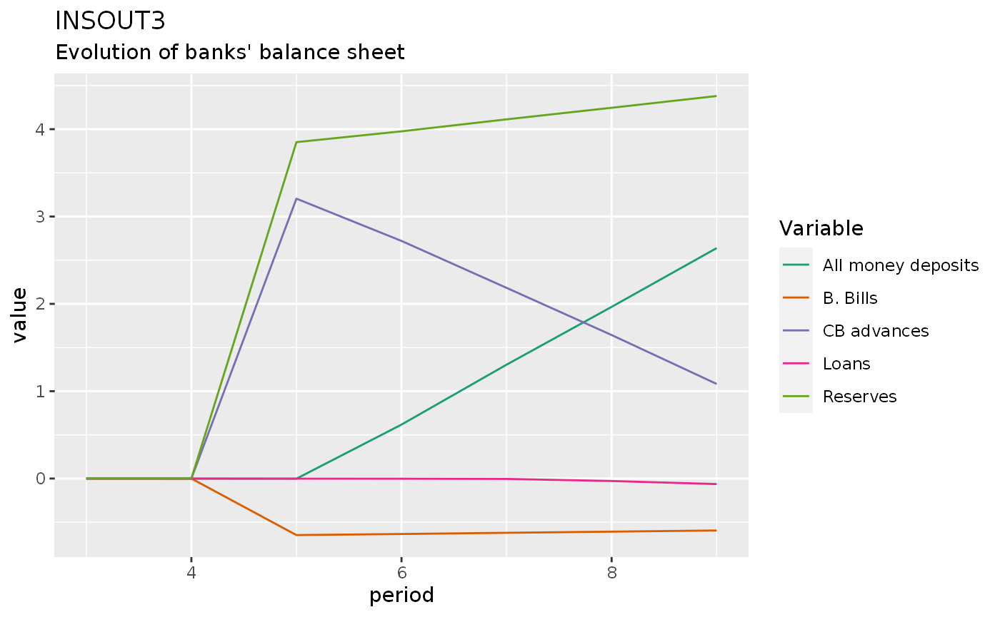
insout3 %>%
do_plot(c("top", "bot", "BLRN")) +
labs(title = "INSOUT3",
subtitle = "Evolution of net bank liquidity ratio")
insout3 %>%
do_plot(c("rm", "rb", "rl")) +
labs(title = "INSOUT3",
subtitle = "Evolution of interest rates")
insout3 %>%
do_plot(c("toppm", "botpm", "BPM")) +
labs(title = "INSOUT3",
subtitle = "Evolution of bank profitability margin")
insout3 %>%
do_plot(c("M")) +
labs(title = "INSOUT3",
subtitle = "Evolution of money deposits")
Simulation 4: An increase in the acceptable bank liquidity ratio
shock4 <- sfcr_shock(
variables = sfcr_set(
top ~ 0.24,
bot ~ 0.2
),
start = 5,
end = 70
)
insout4 <- sfcr_scenario(insout, list(shock4), 70)
insout4 %>%
do_plot("BLRN") +
map(c(0.03, 0.06, 0.2, 0.24), ~geom_hline(yintercept = .x)) +
labs(title = "INSOUT4",
subtitle = "Evolution of net bank liquidity ratio")
insout4 %>%
do_plot(c("rl", "rb", "rm")) +
labs(title = "INSOUT4",
subtitle = "Evolution of interest rates")
insout4 %>%
do_plot(variables = c("dM", "dLs", "dAs", "dHbs", "dBbd")) +
labs(title = "INSOUT4",
subtitle = "Evolution of banks' balance sheet")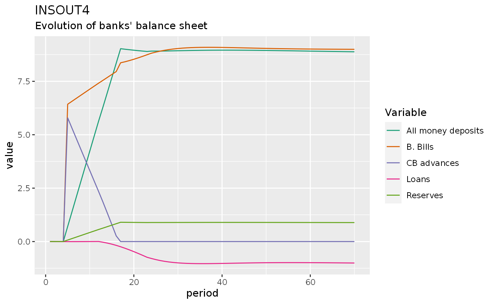
Simulation 5: A decrease in the propensity to consume out of real disposable income
shock5 <- sfcr_shock(
variables = sfcr_set(
alpha1 ~ 0.8
),
start = 5,
end = 70
)
insout5 <- sfcr_scenario(insout, list(shock5), 70)
insout5 %>%
do_plot(c("ydr", "c")) +
labs(title = "INSOUT5",
subtitle = "Evolution of consumption and income")
insout5 %>%
do_plot("gr2") +
labs(title = "INSOUT5")
#> Warning: Removed 1 row(s) containing missing values (geom_path).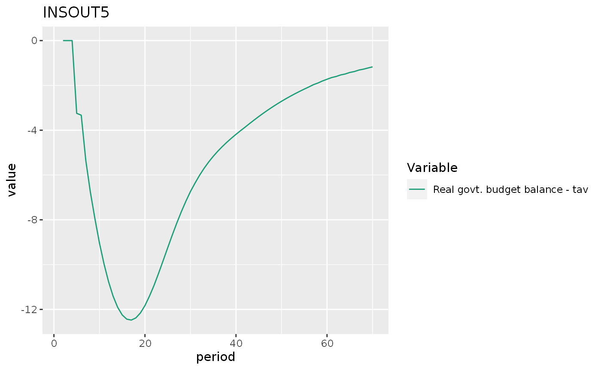
Simulation 6: An exogenous increase in the rate of inflation
shock6 <- sfcr_shock(
variables = sfcr_set(
Omega0 ~ -0.2
),
start = 5,
end = 70
)
insout6 <- sfcr_scenario(insout, list(shock6), 70)
insout6 %>%
do_plot("pi") +
labs(title = "INSOUT6")
insout6 %>%
do_plot(c("y", "s")) +
labs(title = "INSOUT6",
subtitle = "Evolution of output and sales")
insout6 %>%
do_plot(c("dPSBR", "PSBR")) +
labs(title = "INSOUT6",
subtitle = "Evolution of public sector borrowing requirements")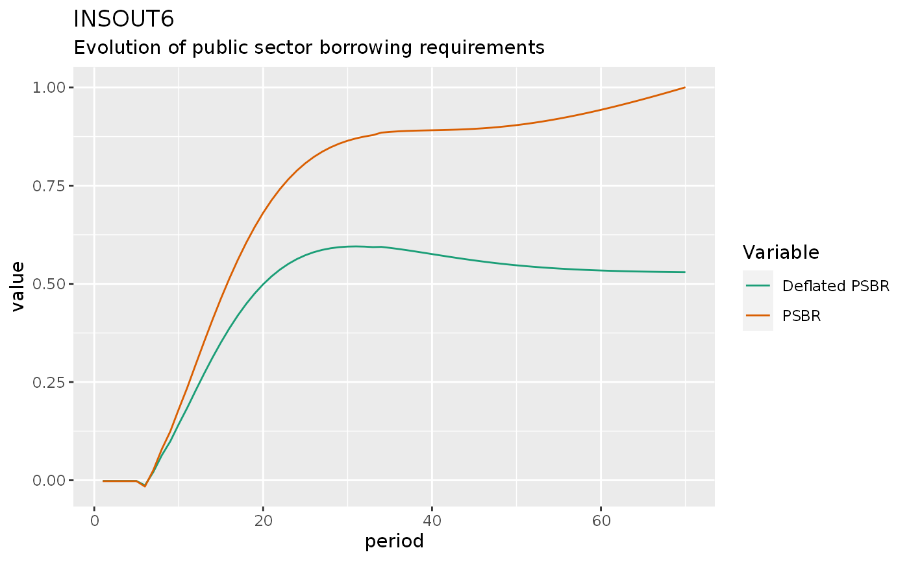
insout6 %>%
do_plot(c("gr", "gr2"))
#> Warning: Removed 2 row(s) containing missing values (geom_path).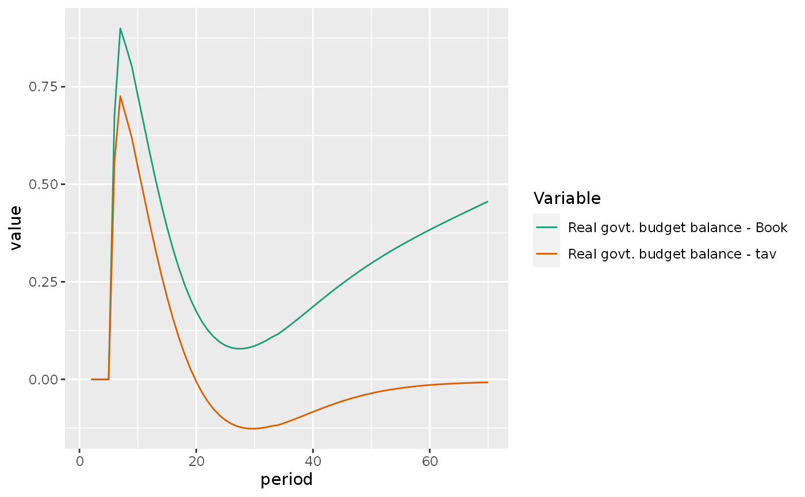
Simulation 7: Increase in the target real wage followed by an increase in interest rates
shock6 <- sfcr_shock(
variables = sfcr_set(
Omega0 ~ -0.2
),
start = 4,
end = 55
)
shock7 <- sfcr_shock(
variables = sfcr_set(
rb ~ 0.03,
rbl ~ 0.039
),
start = 5,
end = 55
)
insout7 <- sfcr_scenario(insout, list(shock6, shock7), 55, tol = 1e-30)
insout7 %>%
do_plot("pi") +
labs(title = "INSOUT7")
insout7 %>%
do_plot("s") +
labs(title = "INSOUT7")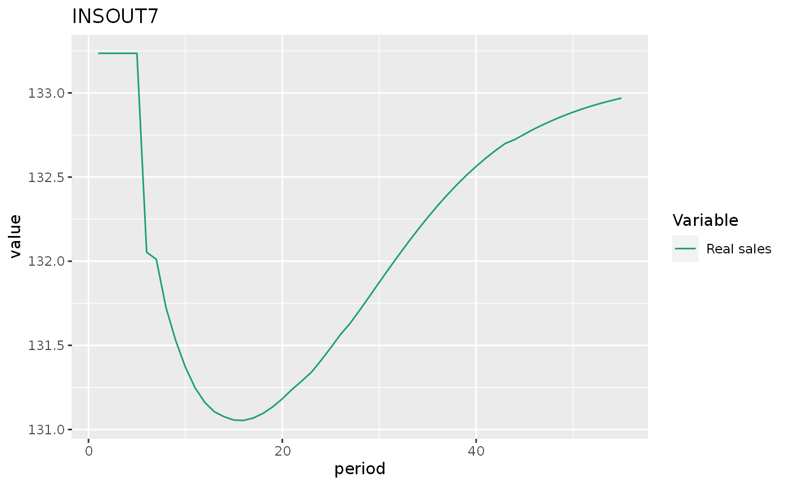
insout7 %>%
mutate(`Deflated government debt` = (Bs + pbl * BLs) / p) %>%
do_plot(c("v", "Deflated government debt")) +
labs(title = "INSOUT7")
insout7 %>%
mutate(`deflated balance` = -PSBR / p) %>%
do_plot(c("deflated balance", "gr2")) +
labs(title = "INSOUT7")
#> Warning: Removed 1 row(s) containing missing values (geom_path).